Baseline Final
Final baseline reconstruction using the selected baseline configuration.

Computer Vision - II (HW4)
Submitted By: Mohak Sharma (ms7306)
Part 1
| Field | Baseline | High Quality (HQ) |
|---|---|---|
| L | 10 | 12 |
| Width | 256 | 384 |
| Hidden layers | 4 | 5 |
| LR | 0.01 | 0.008 |
| Min LR | 0.0004 | 0.0002 |
| Steps | 1800 | 2600 |
| Batch size | 8000 | 10000 |
Final baseline reconstruction using the selected baseline configuration.
Final high-quality reconstruction after the stronger configuration run.

Baseline training snapshots over time.

High-quality training snapshots over time.

Validation quality for the baseline run.

Validation quality for the high-quality run.

The four-run grid comparing two values of L and
two width values.

Best grid config: L=10, width=256,
PSNR=25.70 dB.
| L | Width | PSNR (dB) | MSE |
|---|---|---|---|
| 10 | 256 | 25.70 | 0.002689 |
| 10 | 128 | 25.35 | 0.002920 |
| 4 | 128 | 24.43 | 0.003602 |
| 4 | 256 | 24.06 | 0.003925 |
L values and two width
values are shown with the grid figure and summary table.
Part 2
These saved screenshots capture the interactive Viser visualization used to inspect the reconstruction setup and camera/ray geometry.
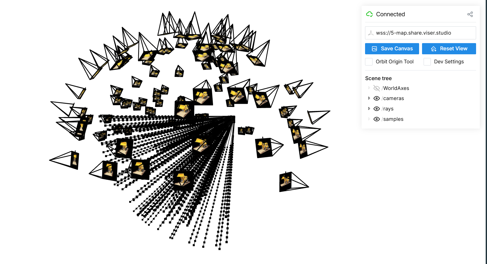
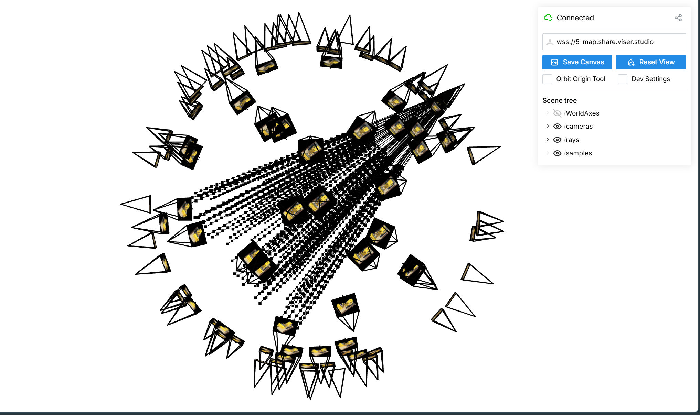
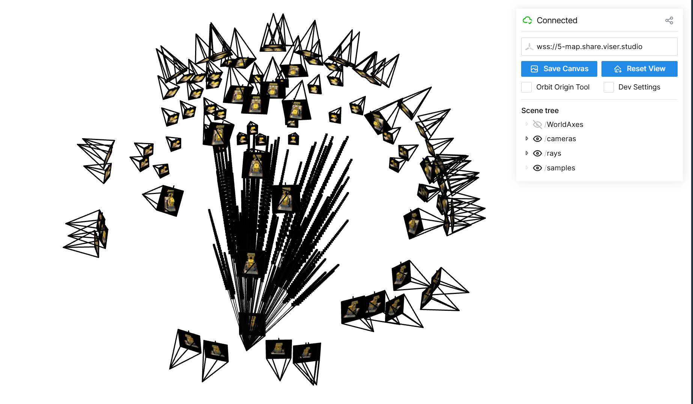
The training loss over optimization steps.
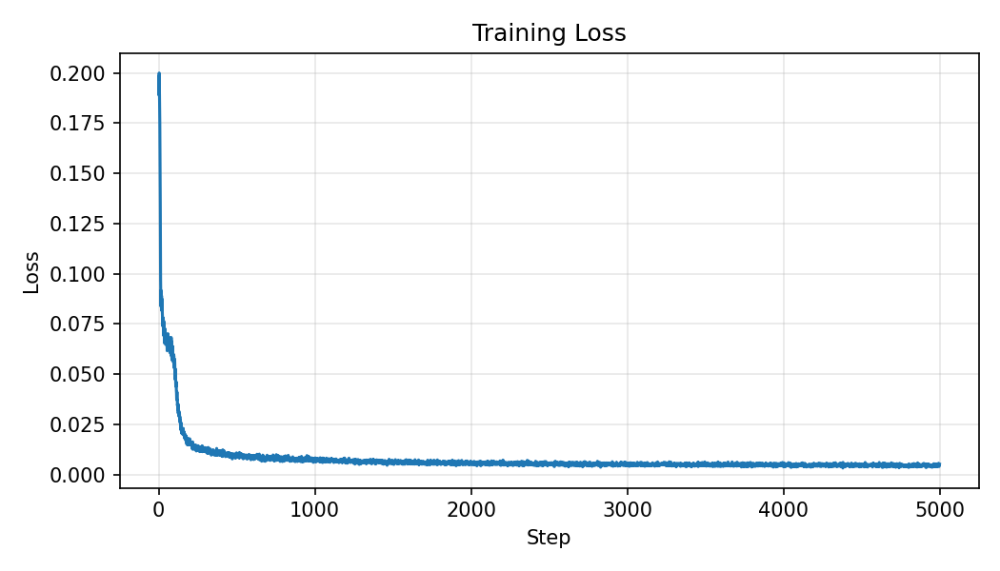
Validation quality tracked across evaluation checkpoints.
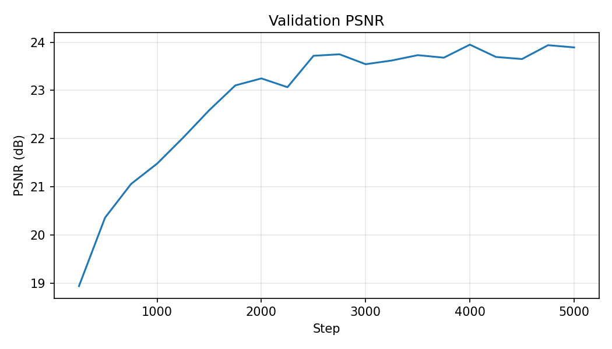
These snapshots show how the validation render sharpened throughout training.
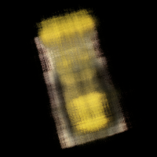
Step 250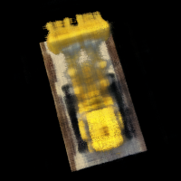
Step 1000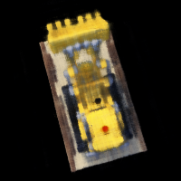
Step 2000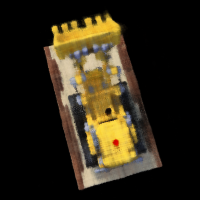
Step 3000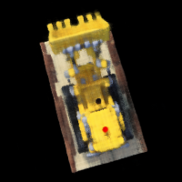
Step 4000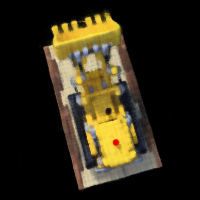
Step 5000The final rendered RGB flythrough assembled from the test views.
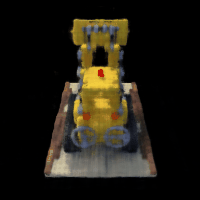
The matching depth trajectory rendered from the same camera path.
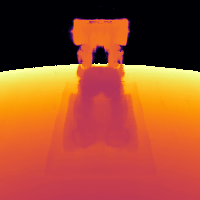